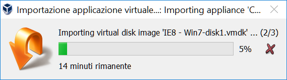
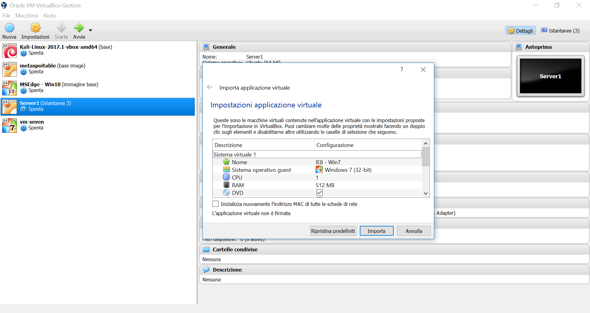
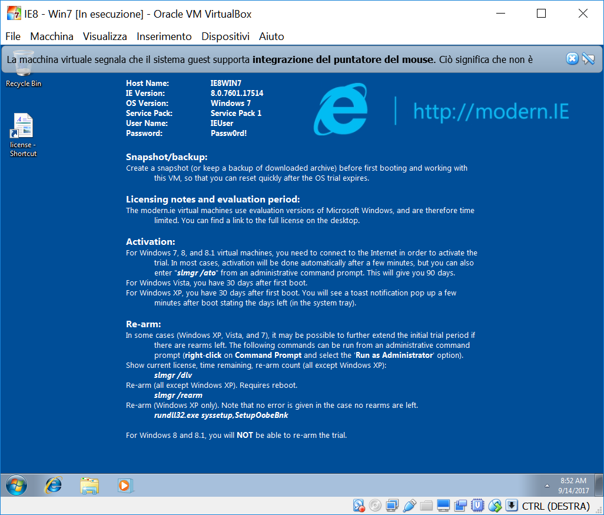
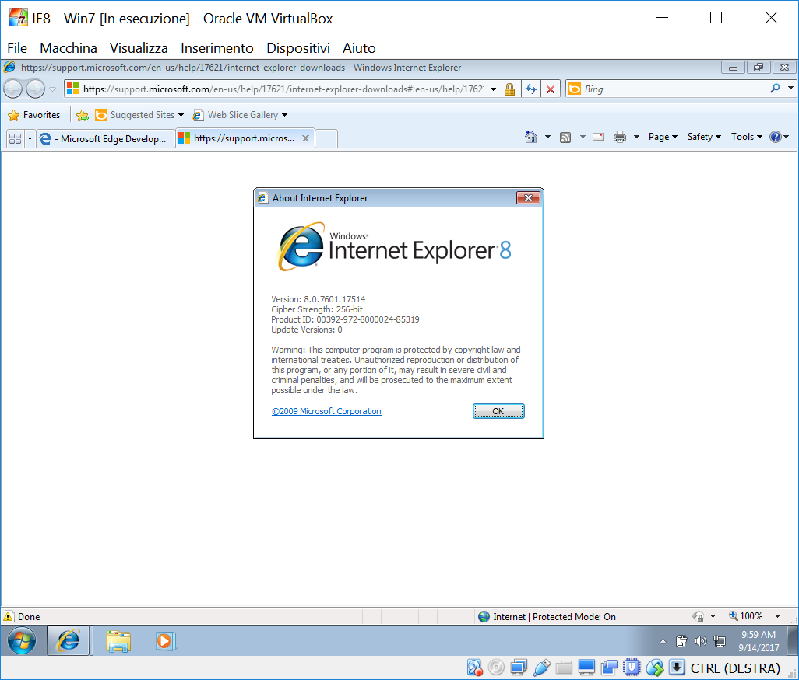
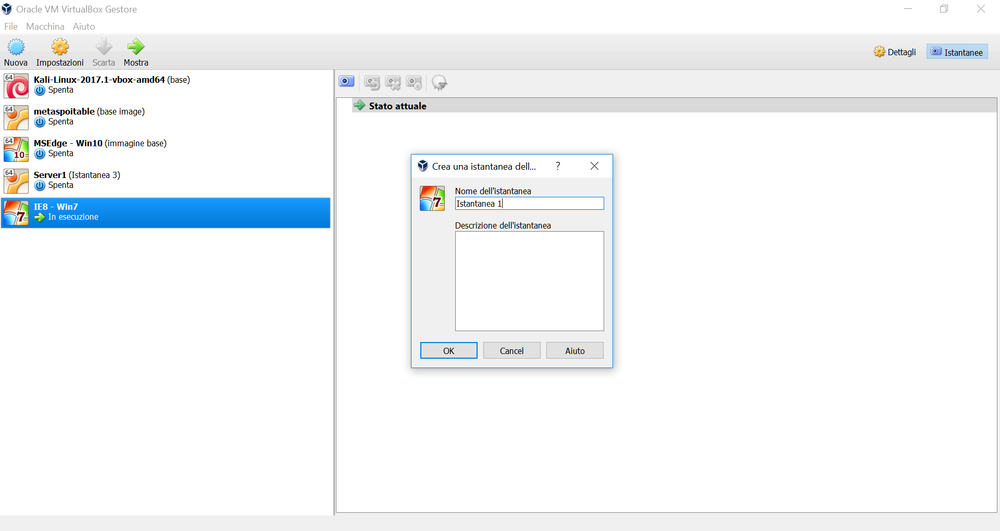
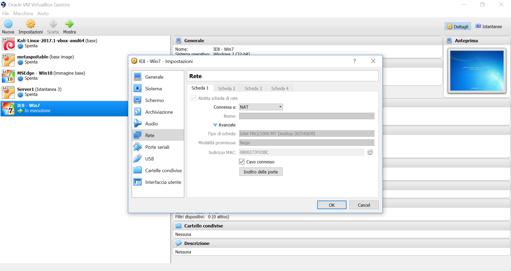
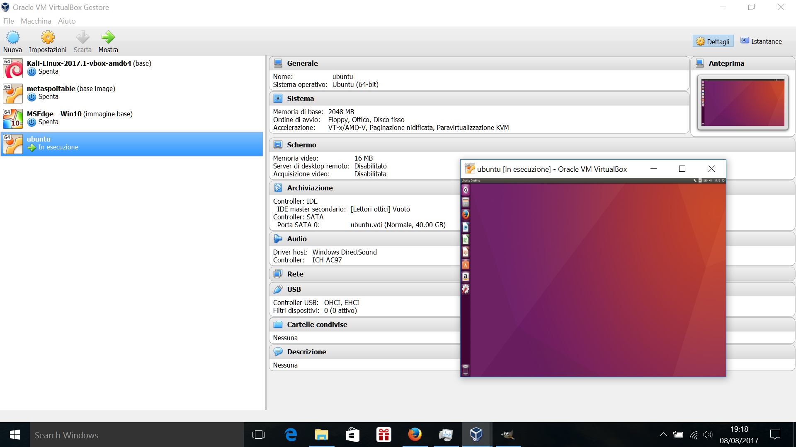
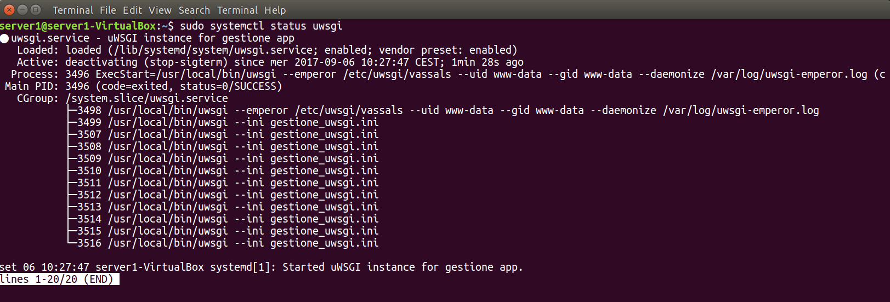

The same project will create with Gretl, Python and Deep Learning in Python.
We use for create the model the Backward elimination method and the CAP for evaluate it.
We use the regression but is not possible use the Multiple Linear Regression because the result of the function is a discrete variable(0, 1) then we use the Logistic Regression.
The Logistic Regression is a regression model to determine the probability of a dependent variable that is categorical(Yes or No) or binary how in our case(0,1).
This is the formula : y(probability - dependent variable) = σ(β 0 + β 1x 1 + β 2x 2 + ... + β nx n)
dove σ è la Sigmoid Function (image below), β 0 .... β n are the coefficients and x 1 .. x n are the independent variables.
Read more
Backpropagation is a backward propagation of errors and is a powerful tool of the deep learning. With the Gradient Descent the backpropagation reduce the cost function and the time of execution. We now talk about of calculate the Gradient Descent.

The virtual reality
In this post we analyze the virtual reality and specifically of the Web Framework A-FRAME. We use A-FRAME for inserting image into web pages. To do this we can use resources already created or create new with special library. In below window there is an example.
Read moreinsert into html page the script :
https://aframe.io/releases/0.6.1/aframe.min.js
Then you must insert the others library for create new images or for use old images :https://unpkg.com/aframe-animation-component@3.2.1/dist/aframe-animation-component.min.js https://unpkg.com/aframe-particle-system-component@1.0.x/dist/aframe-particle-system-component.min.js https://unpkg.com/aframe-gradient-sky@1.0.4/dist/gradientsky.min.js https://unpkg.com/aframe-extras.ocean@%5E3.5.x/dist/aframe-extras.ocean.js
If you want use images already available, you must insert the following code : We can also include 360 degree photos. Below there is an example: Furthermore, with the javascript library Three.Js we can create any object. The frame below, for example, is been created with Three.js and it moves with the scroll of the mouse. Click on the following button for change the images into the frame. Now, we see how create static or animated images with Three.js. First of all, we have need to define into an script the objects SCENE, CAMERA and RENDERER.The SCENE object identifies the space where will be insert the others objects, while the object CAMERA defines how to view the images and the object RENDERER defines how publicat the images created. Naturally, for every object, there will be others parameter to insert how we'll see in the later examples. Others objects to define are GEOMETRY (as box and spheres or the geometry figures), MATERIAL (complement object as, for example , color parameter) and MESH. This MESH takes object GEOMETRY and apply to it the object MATERIAL. Then we must take the object created with MESH and we catch it with SCENE with the command Camera.position.z = 5 attention to assign a different position at the objects, otherwise everyone has the coordinate (0,0,0). Now we must do the RENDERER for viewing into the video the object created or, if we need an animation, we can insert it simultaneously. Animate for create an animation and RENDERER. RENDER(scene, camera) for view created object without animation. In the image below we see the html code used.
This is the result of the same code in javascript.
Create a virtual machine with Virtual Box

Now we talk about virtual box. First of all we download the installer file from www.virtualbox.org relative of the version of operating system. Download also the Virtual Box Extension Pack.
Install the Virtual
Box previosly downloaded. Now start the Virtual Box and download the virtual machine file ready for the V.M. for example file with extension .ova
Download the zip file, extract the file .ova and with a double click launch the automatic installation of the V.M. In the example below we create a V.M. with Windows7 and Internet Explorer 8.
Select import and confirm for terminate the installation.  When the installation terminated the V.M. will open and you will choose the net(you could always change the parameter). In the image below the screenshot of the V.M. installed..
Remember to take note of the user and password that you'll have to enter every time you will open the V.M.
Now in the start button of the V.M. you launch the restart and wait the install of any updates.
The image of Windows7 in valdate for 90 days but you can save the image with the snapshot function. That function is helpful for create a copy before take the updates for eventually restore the V.M.
For customize your V.M. modify the setup parameterin the setting menu. For use USB port or setup parameter of the Net it's necessary install the Extension Pack previosly downloaded.
If you want you can install more V.M. for example a Linux machine.
Application server with Node.js, PM2 and Nginx on Linux Ubuntu 16.04 Lts
by Mecbar 13 luglio 2017
For install NodeJs from Terminal insert :
sudo apt-get install
sudo apt-get install build-essential
If our application is ready install the process
manager pm2 with the command:
sudo npm install -g pm2
and then start the aplication from Terminal
pm2 start name_app.js #from the directory of the app
verify if the app is in execution in the browser insert the link localhost:5500 (port assigned into the app)
If the app is running set the automatic start of Pm2 at the ipl of the machine:
sudo env PATH=$PATH:/usr/bin /usr/lib/node_modules/pm2/bin/pm2 startup systemd -u root --hp /home/root
Now setup the Http Server Nginx hw reverse proxy opening the following file with an editor, here use Nano: seguente con l'editor nano:
sudo nano /etc/nginx/sites-available/default
insert the following text:
location / {
proxy_pass http://localhost:5500;
proxy_http_version 1.1;
proxy_set_header Upgrade $http_upgrade;
proxy_set_header Connection 'upgrade';
proxy_set_header Host $host;
proxy_cache_bypass $http_upgrade;
}
}
if you want insert an other application add the following instruction: location / {}
when all test is written save the file with command ctrl+o and exit with ctrl+x
Now for verifycation the
correct operation shutdown the machine and restart it.
For verification correct automatic start of the process manager pm2 that runs the app insert from Terminal the command pm2 show name_app or pm2 show number_app
We see that the app run and it's active.
insert from Terminal :
We see that the app run and it's active. From the browser insert the link http://localhost:5500 we can open our app and it's work.
Create a web server with uWSGI & Django
by Mecbar 2 settembre 2017
For execute an web application with Django you can use the web server into Python or create an application server with Uwsgi. Here we see how to create an application server with Uwsgi. First of all install Uwsgi from
Terminal:
for test correct execution of Uwsgi create a file python test.py
def application(env, start_response):
start_response('200 OK', [('Content-Type','text/html')])
return [b"Hello World"] # python3
return ["Hello World"] # python2
from Terminal to launch Uwsgi
sudo uwsgi --http :8000 --wsgi-file_test.py
and into browser insert http://localhost:8000
sudo uwsgi --http :8000 --wsgi-file test.py
it's the result of the command python manage.py runserver. Now install Nginx and use an Unix socket for connect to the app
sudo apt-get install nginx
then start the service
sudo /etc/init.d/nginx start
Now go in the directory of the app and create a configuration file of Nginx for the app with tha Nano editor
sudo nano app_nginx.conf
and insert
# nginx.conf
upstream django {
# connect to this socket
# server unix:///path app/name_app.sock; # for a file socket
server 127.0.0.1:8001; # for a web port socket
}
# the port your site will be
served on
listen 8000;
# the domain name it will serve for server_name 127.0.0.1;
# substitute your machine's IP address or FQDN charset utf-8; # max upload size client_max_body_size 75M; # adjust to taste
# Django media
location /media { alias /path_app/static/images; # your Django project's media files - amend as required } # si possono inserire nel file setting.py location /static { alias /percorso mia app/static; # your
Django project's
static files - amend as required
}
# Finally, send all non-media requests to the Django server.
location / {
uwsgi_pass django;
include /etc/nginx/uwsgi_params; # the uwsgi_params file you installed
}
}
press ctrl+o for save and ctrl+x to exit. Now create the link between the file .conf created with Nginx
sudo ln -s ~/path_app/name_app_nginx.conf /etc/nginx/sites-enabled/
into file setting.py of the app insert STATIC_ROOT = os.path.join(BASE_DIR,"static/") for handle static files.
Now restart Nginx
sudo /etc/init.d/nginx restart
[ ok ] Restarting nginx (via systemctl): nginx.service.
sudo systemctl status nginx.service
● nginx.service - A high performance web server and a reverse proxy server Loaded: loaded (/lib/systemd/system/nginx.service; enabled; vendor preset: enabled)
Active: active (running) since mer 2017-08-30 00:10:31 CEST; 4s ago
Process: 14530 ExecStop=/sbin/start-stop-daemon --quiet --stop --retry QUIT/5 --pidfile /run/nginx.pid (code=exited, status=0/SUCCESS)
Process: 14830 ExecStart=/usr/sbin/nginx -g daemon on; master_process on; (code=exited, status=0/SUCCESS)
Process: 14827 ExecStartPre=/usr/sbin/nginx -t -q -g daemon on; master_process on; (code=exited, status=0/SUCCESS) Main PID: 14831 (nginx)
CGroup: /system.slice/nginx.service ├─14831 nginx: master process
/usr/sbin/nginx -g daemon on; master_process on ├─14832 nginx: worker process ├─14833 nginx: worker process ├─14834 nginx: worker process └─14835 nginx: worker process ago 30 00:10:31 mecbar systemd[1]: Starting
A high performance web server and a reverse proxy server... ago 30 00:10:31 mecbar systemd[1]: Started A high performance web server and a reverse proxy server.
copy uwsgi.params into the project directory. Now test the socket
sudo uwsgi --socket :8001 --wsgi-file_test.py
we see the following message how response:
*** Starting uWSGI 2.0.15 (64bit) on [Wed Aug 30 00:35:30 2017] ***
compiled with version: 5.4.0 20160609 on 29 August 2017 23:10:14
os: Linux-4.10.0-33-generic #37~16.04.1-Ubuntu SMP Fri Aug 11 14:07:24
UTC 2017
nodename: xxxxxx
machine: x86_64
clock source: unix detected
number of CPU cores: 4
current working directory: /percorso app
detected binary path: /usr/local/bin/uwsgi
!!! no internal routing support, rebuild with pcre support !!!
*** WARNING: you are running uWSGI without its master process manager ***
your processes number limit is 31000
your memory page size is 4096 bytes
detected max file descriptor number: 1024
lock engine: pthread robust mutexes
thunder lock: disabled (you can enable
it with --thunder-lock)
uwsgi socket 0 bound to TCP address :8001 fd 3
Python version: 2.7.12 (default, Nov 19 2016, 06:48:10) [GCC 5.4.0 20160609]
*** Python threads support is disabled. You can enable it with --enable-threads
***
.... if we insert into the browser http://localhost:8000 we see 'hello world' . For error or problem read the log of Nginx at the link /var/log/nginx/error.log) if error 13: Permission denied or other messagge insert the following command:
sudo uwsgi --socket name_app.sock --wsgi-file_test.py --chmod-socket=666
sudo uwsgi --socket mysite.sock --wsgi-file_test.py --chmod-socket=664 # (more sensible)
Se tutto ok ci siamo e proviamo il socket con la nostra applicazione che per esempio la chiamiamo app
sudo uwsgi --socket app.sock --module app.wsgi –chmod-socket=666
N.B: se errore
502 bad gateway read the log /var/log/nginx → error.log if error 13 Permission denied folder project delete the file app.sock and try again
*** Starting uWSGI 2.0.15 (64bit) on [Wed Aug 30 19:41:56 2017]
*** compiled with version: 5.4.0 20160609 on 29 August 2017 23:10:14
os: Linux-4.10.0-33-generic #37~16.04.1-Ubuntu SMP Fri Aug 11 14:07:24 UTC ..... *** uWSGI is running in multiple interpreter mode ***
into the browser http://localhost:8000 we have our app ready and run through Django, Uwsgi e Nginx. Config uWSGI for execute it with .ini file insert the data into a file and then run it
sudo nano app_uwsgi.ini
# mysite_uwsgi.ini file
[uwsgi]
# Django-related settings
# the base directory (full path)
chdir = /path_app
# Django's wsgi file
module = app.wsgi
# the virtualenv (full path)
home = /path/virtualenv
# process-related settings
# master master = true
# maximum number of worker processes processes = 10
# the socket (use the full path to be safe
socket = /path/app.sock # ... with appropriate permissions - may be needed
# chmod-socket = 664 # chmod-socket = 666
# clear environment on exit
vacuum = true
press ctrl+o to save then ctrl+x for exit and execute created file
sudo uwsgi --ini app_uwsgi.ini # the --ini option it means that is a file
[uWSGI] getting INI configuration from app_uwsgi.ini *** Starting uWSGI 2.0.15 (64bit) on [Wed Aug 30 20:49:26 2017] *** compiled with version: 5.4.0 20160609 on 29 August 2017 23:10:14 os: Linux-4.10.0-33-generic #37~16.04.1-Ubuntu SMP Fri Aug 11 14:07:24 UTC 2017...........
For the end of configuration set Emperor methd for handle more application on the same server (uid user id – gid group id) - create the directory uwsgi into the folder /etc
sudo mkdir /etc/uwsgi
sudo mkdir /etc/uwsgi/vassals
than a file ini with folder vassals
sudo ln -s /path/app_uwsgi.ini /etc/uwsgi/vassals/
sudo uwsgi --emperor /etc/uwsgi/vassals --uid www-data --gid www-data
*** Starting uWSGI 2.0.15 (64bit) on [Wed Aug 30 20:57:24 2017] *** compiled with version: 5.4.0 20160609 on 29 August 2017 23:10:14 os: Linux-4.10.0-33-generic #37~16.04.1-Ubuntu SMP Fri Aug 11 14:07:24 UTC 2017 nodename: xxxxxx machine: x86_64 clock source: unix detected number of CPU cores: 4 current working directory: /path_app detected binary path: /usr/local/bin/uwsgi !!! no internal routing support, rebuild with pcre support !!! setgid() to 33 setuid() to 33 *** WARNING: you are running uWSGI without its master process manager *** your processes number limit is 31000 your memory page size is 4096 bytes detected max file descriptor number: 1024 *** starting uWSGI Emperor *** *** has_emperor mode detected (fd: 6) *** [uWSGI] getting INI configuration from app_uwsgi.ini *** .... - [emperor] vassal app_uwsgi.ini is now loyal.
Into the browser app is ready.
Now set the automatic start of the service Uwsgi with the systemctl of linux.
Create the file uwsgi.service
sudo nano /etc/systemd/system/uwsgi.service
and insert the following data
[Unit]
Description=uWSGI Emperor
After=syslog.target
[Service]
ExecStart=/usr/local/bin/sudo uwsgi --emperor /etc/uwsgi/vassals/ --uid www-data --gid www-data --daemonize /var/log/uwsgi-emperor.log
# Requires systemd version
211 or newer
RuntimeDirectory=uwsgi
Restart=always
KillSignal=SIGQUIT
Type=notify StandardError=syslog
NotifyAccess=all
[Install]
WantedBy=multi-user.target
ctrl+o for save and crl+x for exit. Start the service and test if it is active
sudo systemctl start uwsgi.service
sudo systemctl status uwsgi.service

For test if service is automatic active at every restart run the system restart and just the system is ready check the status of service. if it's active we finished. That's all
View Nginx PM2 and firewall of Linux
by Mecbar 13 settembre 2017
In the previous post we have used Nginx and PM2. Now we see how use them on Linux Ubuntu 16.04 Lts. Nginx is a web server/reverse proxy with elevate performans and can be used also as server proxy for email on different operating system. First of all install it with the command from Terminal
sudo apt-get install nginxsudo /etc/init.d/nginx start
[ ok ] Starting nginx (via systemctl): nginx.service.
sudo systemctl status nginx.service other command are service stop or restart sudo systemctl stop nginx.service sudo systemctl restart nginx.service In the following scheme we see how Nginxinteracts with the other application and the web. From the browser the user call Nginx that transfer the request at Uwsgi/Django (back-end). Django create the answer and through Uwsgi send it via Nginx at browser for the user.
Some commands for Firewall of Linux are the followings:
- sudo ufw status
- sudo ufw enable # enable the firewall
- sudo ufw disable # disable the firewall
- sudo ufw allow port 80 # enable port for ex. the port 80
- sudo ufw allow 'Nginx http' # enable nginx for protocol http
In the example below we see the open port from Firewall. In the previous post we see how use Nginx with Uwsgi and Django now instead we talk about PM2 for NodeJs. PM2 is a process manager. It allows us to handle more web application on one server. With PM2 the application are always ready on the server for the request of the user In the previous post we have seen how to install and use it with Nginx. Now we show some commands for PM2.
- sudo systemctl status pm2 #for show status of PM2
- sudo systemctl stop pm2 # for stop run of PM2
- sudo systemctl start pm2
- sudo systemctl restart pm2
- sudo pm2 show n.ro application or name of application
- sudo pm2 monit
- sudo pm2 list # application list handle by PM2
- sudo pm2 start name_app # start the app
- sudo pm2 restart name_app # restart the app
- sudo pm2 stop name_app # stop run app